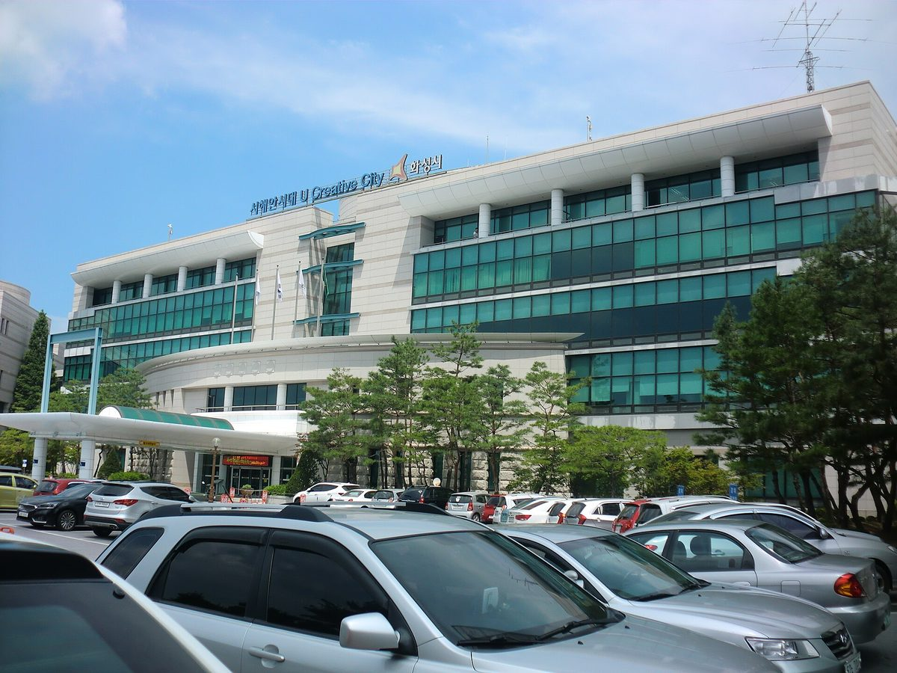

화성 농산물산지유통센터 옥상에 299kW 시민발전소…시가 지붕 내주고 시민이 출자한 'RE빛 제4호' 준공

화성시민재생에너지발전협동조합 "화성 첫 시유지 시민에너지발전소"…시장은 공공시설 옥상·주차장으로 시민참여형 태양광 확대, 조합은 장안면 석포6리 햇빛소득마을 추진
경기 화성시가 소유한 농산물산지유통센터 옥상에 시민들이 출자해 지은 299kW 규모 태양광 발전소가 29일 문을 열었다. 화성시민재생에너지발전협동조합은 이날 센터에서 'RE빛 제4호 시민에너지발전소' 준공식을 열었으며, 조합에 따르면 시가 공공시설을 내주고 시민이 출자해 세운 화성의 첫 시유지 시민에너지발전소다. 준공식에는 정명근 화성특례시장과 이홍근 경기도의원, 조합원 등 120여 명이 참석했고, 송옥주·전용기·권칠승 국회의원과 이계철 화성특례시의회 의장은 서면으로 축하를 전했다. 강석찬 이사장은 에너지 수입 의존도가 높은 현실에서 재생에너지 전환과 에너지 자립이 중요하다며, 이번 발전소는 공공부지를 시민이 쓸 수 있게 하고 시민 출자로 지은 민관협력 사례라고 말했다. 정 시장은 "시민과 행정이 함께 에너지 전환과 기본사회·기본에너지 정책을 실현한 소중한 성과"라고 평가하고, 공공시설 옥상과 주차장 같은 유휴공간을 찾아 시민참여형 태양광 사업을 넓히겠다고 밝혔다. 조합은 화성 곳곳에서 주민 에너지협동조합 설립과 햇빛소득마을 사업이 추진되고 있다며, 장안면 석포6리 햇빛소득마을을 시작으로 발전소를 늘리고 발전 수익을 조합원만이 아니라 이웃과 지역사회에도 나누는 구조를 만들겠다고 했다.
시민에너지 관점
오스트리아 빈의 시영 에너지회사 빈에네르기(Wien Energie)는 2012년부터 시민이 태양광 패널 몫을 사들이고 그 대가를 해마다 돌려받는 '시민 태양광발전소'를 넓혀 왔는데, 화성의 이번 발전소는 한 걸음 더 나아가 시가 지붕만 내주고 발전소의 소유와 운영을 시민협동조합에 맡긴 경우다. 공공시설을 특정 조합에 내주는 것이 특혜 아니냐는 물음이 나올 수 있지만, 사용 조건과 수익 배분을 공개하고 시민 누구나 출자할 수 있게 열어 두면 공공의 지붕은 오히려 시민 모두의 자산이 된다. 같은 조합이 도심 공공건물 옥상과 농촌 햇빛소득마을을 함께 꾸린다는 점은 시민 소유 발전소가 도시와 농촌을 잇는 지역 에너지 경제의 뼈대가 될 수 있음을 보여 준다. 시장이 약속한 공공시설 옥상·주차장 확대가 시 직영이나 외부 사업자 발주로만 흐르지 않도록, 화성시는 시민 출자 방식을 기본 원칙으로 삼는 공모 절차와 조례부터 갖춰야 한다.
출처: 뉴스Q 2026-10-29 장명구 원문 보기
華城市の農産物産地流通センター屋上に299kWの市民発電所…市が屋根を提供し市民が出資した「REビッ第4号」が竣工
華城市民再生エネルギー発電協同組合「華城初の市有地市民エネルギー発電所」…市長は公共施設の屋上・駐車場で市民参加型太陽光を拡大、組合は長安面石浦6里の「ひなた所得村」を推進
韓国京畿道華城（ファソン）市が所有する農産物産地流通センターの屋上に、市民の出資で建てた299kW規模の太陽光発電所が29日に完成した。華城市民再生エネルギー発電協同組合はこの日、同センターで「REビッ（RE빛）第4号市民エネルギー発電所」の竣工式を開き、組合によると、市が公共施設を提供し市民が出資して建てた華城初の市有地市民エネルギー発電所となる。竣工式にはチョン・ミョングン華城特例市長やイ・ホングン京畿道議会議員、組合員ら約120人が出席し、ソン・オクジュ、チョン・ヨンギ、クォン・チルスンの各国会議員とイ・ゲチョル華城特例市議会議長は書面で祝意を伝えた。カン・ソクチャン理事長は、エネルギーの輸入依存度が高い現実の中で再生可能エネルギーへの転換とエネルギー自立が重要だとし、今回の発電所は公共用地を市民が使えるようにし、市民の出資で建てた官民協力の事例だと述べた。チョン市長は「市民と行政が共にエネルギー転換と基本社会・基本エネルギー政策を実現した貴重な成果」と評価し、公共施設の屋上や駐車場などの遊休スペースを探して市民参加型の太陽光事業を広げると表明した。組合は、華城市内の各地で住民のエネルギー協同組合の設立と「ひなた所得村（햇빛소득마을）」事業が進められているとして、長安面石浦6里のひなた所得村を皮切りに発電所を増やし、発電収益を組合員だけでなく近隣住民や地域社会にも分かち合う仕組みをつくるとした。
市民エネルギーの視点
オーストリア・ウィーンの市営エネルギー会社ウィーン・エネルギー（Wien Energie）は2012年から、市民が太陽光パネルの持ち分を購入し、その対価を毎年受け取る「市民太陽光発電所」を広げてきたが、華城の今回の発電所はさらに一歩進み、市は屋根を提供するだけで、発電所の所有と運営を市民協同組合に任せた例だ。公共施設を特定の組合に貸すのは特恵ではないかとの疑問も出うるが、使用条件と収益配分を公開し、誰でも出資できるよう開いておけば、公共の屋根はむしろ市民全体の資産になる。同じ組合が都市の公共建物の屋上と農村のひなた所得村を共に運営している点は、市民所有の発電所が都市と農村を結ぶ地域エネルギー経済の骨格になりうることを示している。市長が約束した公共施設の屋上・駐車場への拡大が市の直営や外部事業者への発注だけに流れないよう、華城市は市民出資方式を基本原則とする公募手続きと条例をまず整えるべきだ。
出典: ニュースQ 2026-10-29 チャン・ミョング 原文を読む
华城农产品产地流通中心屋顶建成299kW市民发电站…市政府提供屋顶、市民出资的"RE光第4号"竣工
华城市民再生能源发电合作社称"华城首座市有地市民能源发电站"…市长表示将在公共设施屋顶和停车场扩大市民参与型光伏，合作社推进长安面石浦6里"阳光收入村"
在韩国京畿道华城市所有的农产品产地流通中心屋顶上，一座由市民出资建设的299kW太阳能发电站于29日建成。华城市民再生能源发电合作社当天在该中心举行"RE光（RE빛）第4号市民能源发电站"竣工仪式。据合作社介绍，这是华城首座由市政府提供公共设施、市民出资建设的市有地市民能源发电站。华城特例市长郑明根、京畿道议员이홍근（Lee Hong-geun）以及合作社社员等约120人出席仪式，国会议员宋玉珠、전용기（Jeon Yong-gi）、权七胜和华城特例市议会议长이계철（Lee Gye-cheol）发来书面贺词。理事长강석찬（Kang Seok-chan）表示，在能源高度依赖进口的现实下，推进再生能源转型和能源自立十分重要，这座发电站让市民得以使用公共用地，并以市民出资建成，是官民合作的范例。郑明根市长评价称，这是"市民与行政部门携手实现能源转型和基本社会·基本能源政策的宝贵成果"，并表示将发掘公共设施屋顶和停车场等闲置空间，扩大市民参与型光伏发电项目。合作社表示，华城多个村庄正在推进成立居民能源合作社和"阳光收入村（햇빛소득마을）"项目，将以长安面石浦6里阳光收入村为起点增建发电站，并建立让发电收益不仅惠及社员、也惠及邻里和地方社会的结构。
市民能源视角
奥地利维也纳市营能源公司维也纳能源（Wien Energie）自2012年起推广"市民太阳能发电站"，让市民购买光伏板份额并每年获得回报；华城这座发电站则更进一步，市政府只提供屋顶，发电站的所有和运营交给市民合作社。有人可能会问，把公共设施交给特定合作社是否构成特惠，但只要公开使用条件和收益分配、向所有市民开放出资，公共屋顶反而会成为全体市民的资产。同一家合作社同时经营城市公共建筑屋顶和农村阳光收入村，说明市民所有的发电站可以成为连接城乡的地方能源经济骨架。为了让市长承诺的公共设施屋顶和停车场扩建不只流向市政府直营或外部企业发包，华城市应首先建立以市民出资为基本原则的公开招募程序和条例。
来源: NewsQ 2026-10-29 장명구（Jang Myeong-gu） 查看原文
Citizens' 299kW solar plant opens on Hwaseong produce centre roof as city lends the roof and residents put up the money for 'RE-bit No. 4'
Hwaseong Citizens' Renewable Energy Cooperative calls it the city's first citizen power plant on city-owned property; the mayor pledges more citizen solar on public rooftops and car parks, and the cooperative is pursuing a sunlight income village in Seokpo 6-ri, Jangan-myeon
A 299kW solar power plant built with money from local citizens opened on 29 October on the roof of an agricultural produce distribution centre owned by the city of Hwaseong in Gyeonggi Province. The Hwaseong Citizens' Renewable Energy Cooperative held a completion ceremony for the "RE-bit (RE빛) No. 4 Citizen Energy Power Plant" at the centre, and according to the cooperative it is Hwaseong's first citizen power plant on city-owned property, set up on a public facility provided by the city and financed by citizens. About 120 people, including Hwaseong Special City Mayor Jung Myung-geun, Gyeonggi provincial assembly member Lee Hong-geun and cooperative members, attended, while National Assembly members Song Ok-joo, Jeon Yong-gi and Kwon Chil-seung and city council chair Lee Gye-cheol sent written congratulations. Cooperative chair Kang Seok-chan said that with Korea so dependent on imported energy, the shift to renewables and energy self-reliance matter, and called the plant a public-private partnership in which public land was opened to citizens and the facility was built with their investment. Mayor Jung called it "a valuable achievement in which citizens and the administration together realised the energy transition and basic society and basic energy policies," and said the city would look for idle spaces such as public rooftops and car parks to expand citizen-participation solar. The cooperative said residents in several Hwaseong villages are setting up energy cooperatives and pursuing sunlight income village (햇빛소득마을) projects, and that starting with the sunlight income village in Seokpo 6-ri, Jangan-myeon, it plans to add plants and share generation income not only with members but also with neighbours and the wider community.
Citizen Energy View
Vienna's municipal utility Wien Energie has since 2012 been expanding "citizen solar power plants" in which residents buy shares of solar panels and receive a return each year; Hwaseong's new plant goes a step further, with the city only lending the roof and leaving ownership and operation of the plant to a citizens' cooperative. Some may ask whether handing a public facility to one cooperative amounts to favouritism, but if the terms of use and the distribution of income are made public and any resident can invest, the public roof becomes an asset of all citizens. That the same cooperative runs both a public rooftop in town and a sunlight income village in the countryside shows that citizen-owned power plants can form the backbone of a local energy economy linking city and village. So that the mayor's promised expansion to public rooftops and car parks does not simply go to city-run projects or outside contractors, Hwaseong should first put in place an open call procedure and an ordinance that make citizen investment the default.
Source: NewsQ 2026-10-29 Jang Myeong-gu Read the original